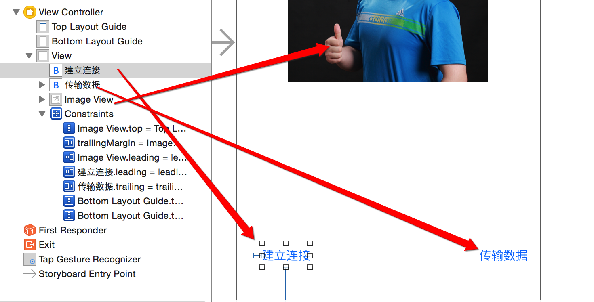
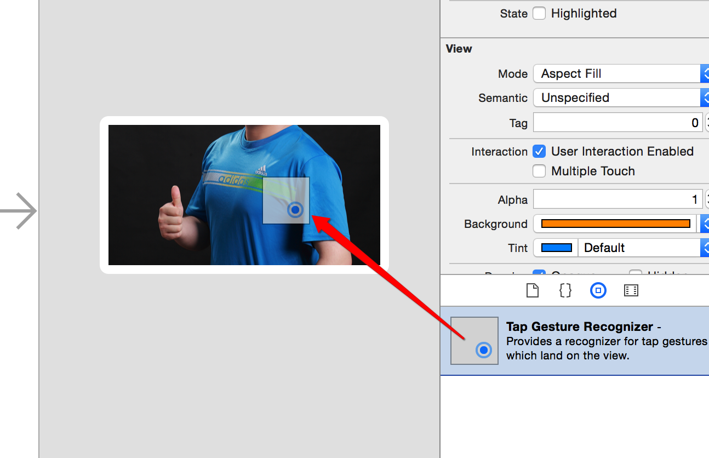
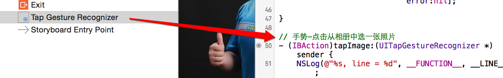

GameKit用法
一.准备工作
1.搭建UI 
2.拖线
// 图片
@property (weak, nonatomic) IBOutlet UIImageView *imageView;
// 建立连接
- (IBAction)buildConnect:(id)sender{}
// 发送数据
- (IBAction)sendData:(id)sender{}
二.连接蓝牙
- 显示可以连接的蓝牙设备列表
- (IBAction)buildConnect:(id)sender {
// 创建弹窗
GKPeerPickerController *ppc = [[GKPeerPickerController alloc] init];
// 设置代理 @interface ViewController () <GKPeerPickerControllerDelegate>
ppc.delegate = self;
// 展示
[ppc show];
}
- 监听蓝牙的连接
#pragma mark -GKPeerPickerControllerDelegate
// 连接成功就会调用
- (void)peerPickerController:(GKPeerPickerController *)picker // 弹窗
didConnectPeer:(NSString *)peerID // 连接到的蓝牙设备号
toSession:(GKSession *)session // 连接会话(通过它进行数据交互)
{
NSLog(@"%s, line = %d", __FUNCTION__, __LINE__);
// 弹窗消失
[picker dismiss];
}
三.利用蓝牙传输数据
- 点击图片从相册中选择一张显示本机
- 可以修改imaV为Btn,也可以为imaV添加手势
- 1.修改imageView的用户交互

- 2.添加手势到图片上 
- 3.拖出手势的响应事件 
- 4.完善相册选择图片代码
- 1.修改imageView的用户交互
- 可以修改imaV为Btn,也可以为imaV添加手势
// 手势-点击从相册中选一张照片
- (IBAction)tapImage:(UITapGestureRecognizer *)sender {
NSLog(@"%s, line = %d", __FUNCTION__, __LINE__);
// 先判断是否有相册
if (![UIImagePickerController isSourceTypeAvailable:UIImagePickerControllerSourceTypePhotoLibrary]) {
return;
}
// 创建弹出的控制器
UIImagePickerController *ipc = [[UIImagePickerController alloc] init];
// 设置图片来源为相册
ipc.sourceType = UIImagePickerControllerSourceTypePhotoLibrary;
// 设置代理 @interface ViewController () <UINavigationControllerDelegate, UIImagePickerControllerDelegate>
ipc.delegate = self;
// modal出来
[self presentViewController:ipc animated:YES completion:nil];
}
#pragma mark - UINavigationControllerDelegate, UIImagePickerControllerDelegate
// 选中某图片后调用
- (void)imagePickerController:(UIImagePickerController *)picker didFinishPickingMediaWithInfo:(NSDictionary<NSString *,id> *)info
{
// 控制器返回
[picker dismissViewControllerAnimated:YES completion:nil];
// 设置图片
self.imageView.image = info[UIImagePickerControllerOriginalImage];
}
- 点击发送数据完成图片显示到另一个蓝牙机器上
- 1.分析需要通过GKSession对象来传递数据,所以在
peerPickerController:didConnectPeer:didConnectPeer:的方法中保存session会话
- 1.分析需要通过GKSession对象来传递数据,所以在
@property (nonatomic, strong) GKSession *session; /**< 蓝牙连接会话 */
// 连接成功就会调用
- (void)peerPickerController:(GKPeerPickerController *)picker // 弹窗
didConnectPeer:(NSString *)peerID // 连接到的蓝牙设备号
toSession:(GKSession *)session // 连接会话(通过它进行数据交互)
{
NSLog(@"%s, line = %d", __FUNCTION__, __LINE__);
// 弹窗消失
[picker dismiss];
// 保存会话
self.session = session;
}
- 发送
// 发送数据
- (IBAction)sendData:(id)sender {
if (self.imageView.image == nil) return; // 有图片才继续执行
// 通过蓝牙链接会话发送数据到所有设备
[self.session sendDataToAllPeers:UIImagePNGRepresentation(self.imageView.image) // 数据
withDataMode:GKSendDataReliable // 枚举:发完为止
error:nil];
}
- 接收
// 连接成功就会调用
- (void)peerPickerController:(GKPeerPickerController *)picker // 弹窗
didConnectPeer:(NSString *)peerID // 连接到的蓝牙设备号
toSession:(GKSession *)session // 连接会话(通过它进行数据交互)
{
NSLog(@"%s, line = %d", __FUNCTION__, __LINE__);
// 弹窗消失
[picker dismiss];
// 保存会话
self.session = session;
// 处理接收到的数据[蓝牙设备接收到数据时,就会调用 [self receiveData:fromPeer:inSession:context:]]
// 设置数据接受者为:self
[self.session setDataReceiveHandler:self
withContext:nil];
}
#pragma mark - 蓝牙设备接收到数据时,就会调用
- (void)receiveData:(NSData *)data // 数据
fromPeer:(NSString *)peer // 来自哪个设备
inSession:(GKSession *)session // 连接会话
context:(void *)context
{
NSLog(@"%s, line = %d", __FUNCTION__, __LINE__);
// 显示
self.imageView.image = [UIImage imageWithData:data];
// 写入相册
UIImageWriteToSavedPhotosAlbum(self.imageView.image, nil, nil, nil);
}
四.注意
- 只能用于iOS设备之间的链接
- 只能用于同一个应用程序之间的连接
- 最好别利用蓝牙发送比较大的数据